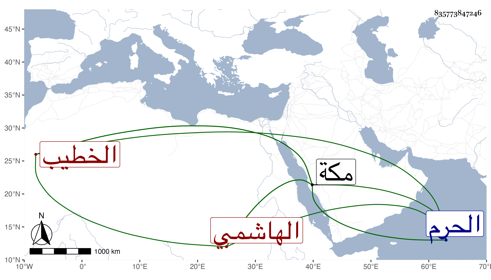

0902Sakhawi.DawLamic.ITO20230111-ara1.EIS1600.835773847246
Biography ID: 835773847246
94
محمد الكمال أبو الفضل الهاشمي أخو الذي قبله ووالد أبي القسم والكمال أبي الفضل محمد الخطيب الآتي وأمه ست الكل ابنة إبراهيم الجيلاني . ولد في المحرم سنة سبع وتسعين وسبعمائة بمكة وحفظ القرآن وكتبا وحضر دروس الجمال ابن ظهيرة وقرأ في الفقه على الشهاب أحمد بن عبد الله الغزي وأذن له في الإفتاء والتدريس بل درس بحضرته في الأفضلية واستمرت بيده حتى انتزعها منه الوجيه عبد الرحمن بن الجمال المصري ، وناب عن أخيه العز في الخطابة بمكة وكذا ناب في نظر الحرم واستقل بهما مع الحسبة بعد موته وعزل مرارا . مات في ربيع الأول سنة سبع وعشرين بمكة وكان قد سمع من ابن صديق والزين المراغي وغيرهما حتى سمع من شيخنا ، وأجاز له ابن الذهبي وابن العلائي والتنوخي وجماعة وطول الفاسي ترجمته ، وذكره المقريزي في عقوده .
